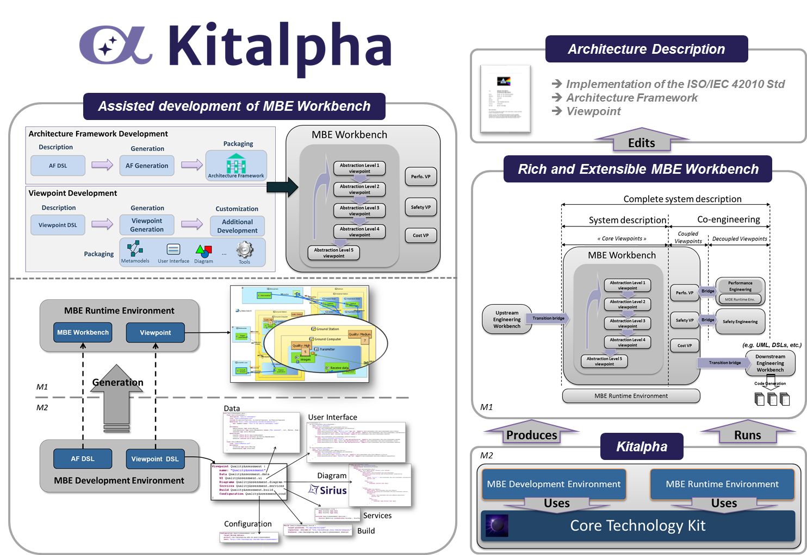

Kitalpha is an environment to develop and execute MBE (Model-Based Engineering) workbenches for description of systems in system, software and hardware engineering.
An environment to develop and execute MBE workbenches…
Kitalpha is dedicated to implement modelling frameworks and viewpoints, and this in coherence with the ISO/IEC 42010 standard for description of system architecture. In this standard, an architecture framework aggregates viewpoints. Each viewpoint describes at least one system concern, such as non-functional concerns (e.g., performance, safety, security, and cost), for involved stakeholders (e.g., safety engineer). Kitalpha extends the definition of viewpoint to also consider it as an engineering extension which comes with its own metamodels, representations (e.g., diagrams, tables, user interfaces), rules (e.g., validation, analysis, transformation), services and tools to address an engineering specialty. Consequently, an MBE workbench is the result of a flexible assembly of core viewpoints extended by new ones which are, in the context of co-engineering, appropriate and valuable for specialty engineers. The set of all the viewpoints provide a solution for the complete description of a system.
...providing both development and runtime services to define, use and manage architecture frameworks and viewpoints
DSL Structure in Kitalpha
The two Kitalpha DSLs, for the definition of architecture framework and viewpoints of an MBE Workbench, follow the same structure:
- An abstract syntax that defines the languages to describe architecture frameworks and viewpoints
- A concrete syntax that enables the designers and developers to describe architectures frameworks and viewpoints
- Data for the definition of metamodels
- User interface for the data representation by user interfaces
- Diagram for the graphical representation of data
- Services for the definition of business rules, services, and parameters
- Build to automatically generate continuous integration scripts
- Configuration to tune the generation parameters of architecture framework and viewpoint artefacts.